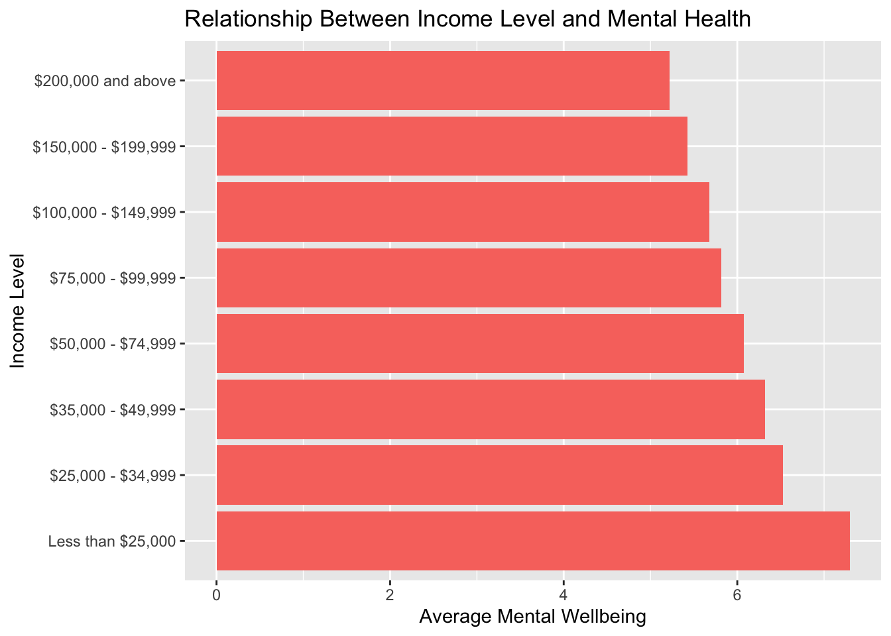
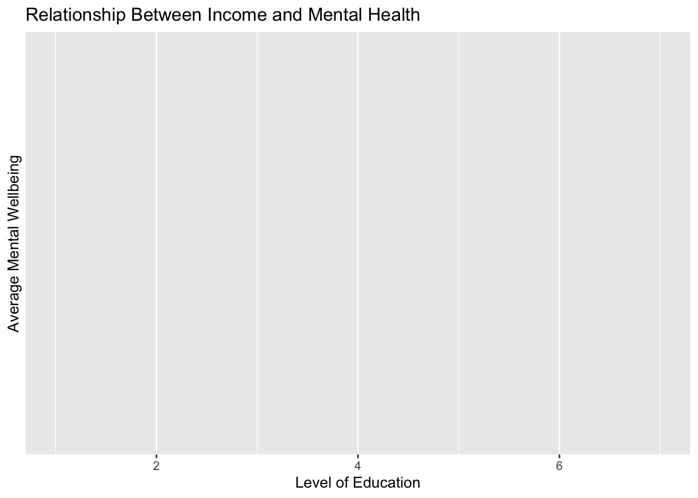
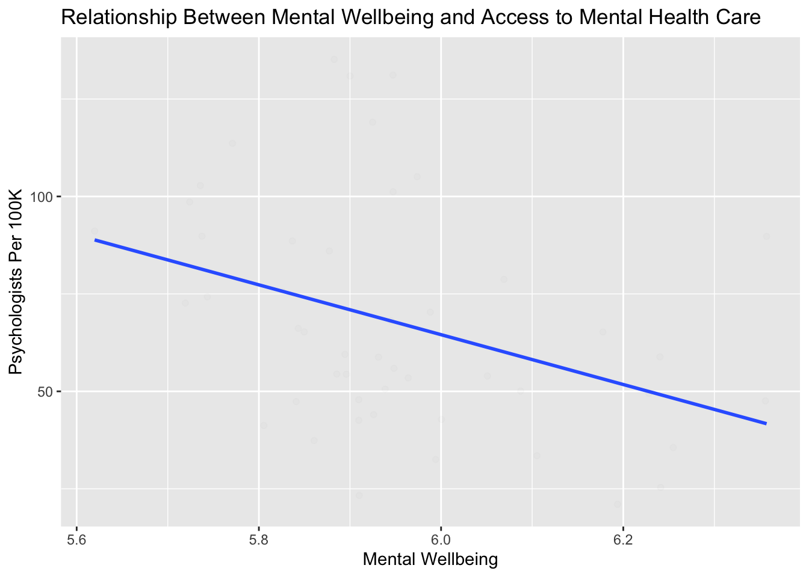
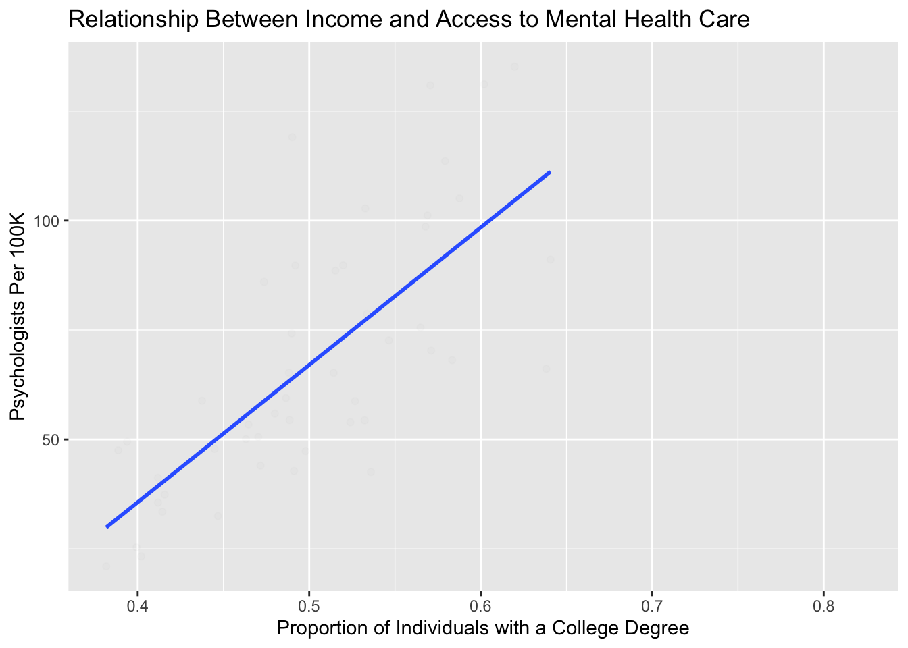
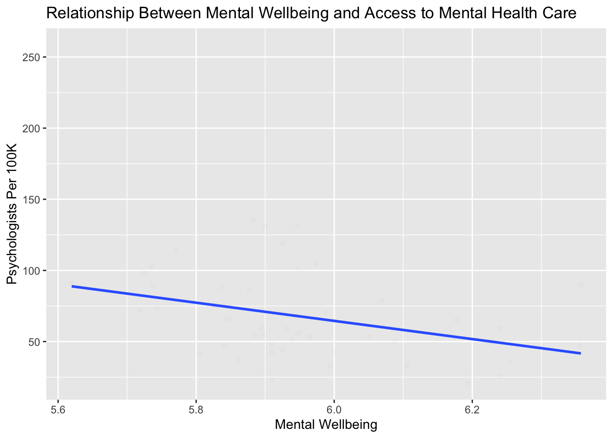

Impact of Income and Education on Mental Wellbeing and Access to Mental Health Care
Several factors impact both mental well-being and access to mental health care. Through analysis of the Household Pulse Survey and Area Health Resource Data, this website examines the relationship between mental well-being, access to mental health care, age, income, education, and race.
Mental well-being is measured through the Household Pulse Survey, where families reported the frequency of certain mental health symptoms, such as loneliness, anxiety, and feeling down. These were then totaled to find an overall measure of mental well-being. Age, income, and education level also come from the Household Pulse Survey. Access to mental health care is measured through the number of psychologists per 100k people.
Getting data from the 2020 decennial Census
Warning: • You have not set a Census API key. Users without a key are limited to 500
queries per day and may experience performance limitations.
ℹ For best results, get a Census API key at
http://api.census.gov/data/key_signup.html and then supply the key to the
`census_api_key()` function to use it throughout your tidycensus session.
This warning is displayed once per session.
Downloading feature geometry from the Census website. To cache shapefiles for use in future sessions, set `options(tigris_use_cache = TRUE)`.
Using the PL 94-171 Redistricting Data Summary File
Note: 2020 decennial Census data use differential privacy, a technique that
introduces errors into data to preserve respondent confidentiality.
ℹ Small counts should be interpreted with caution.
ℹ See https://www.census.gov/library/fact-sheets/2021/protecting-the-confidentiality-of-the-2020-census-redistricting-data.html for additional guidance.
This message is displayed once per session.
Here are all of the different factors and how they change across states. The maps show that income and education appear to be correlated at the state level, as many states with higher average incomes also have higher average levels of education. Additionally, areas with higher average incomes and levels of education appear to also have improved access to care. However, the maps show no clear correlation with mental well-being.
For instance, New York has a high mean income, educational attainment, and psychology count, reaffirming two of our beliefs: states with higher average incomes tend to have higher average levels of educational attainment (1), and states with high averages income and educations levels tend to have better access to psychologists (2). New York’s level of mental health concern is also on the lower end of the scale. With this said, we can not definitively state that there is a correlation between those three factors and mental well-being. Let us look at Utah, for example. Utah has relatively high averages in income, educational attainment, and psychologist count compared to other states. However, they have high mental health concerns compared to other states. In a similar manner, South Carolina has low averages in income, educational attainment, and psychologist count, yet have low mental health concerns when compared to other states with low means in income, educational levels, and psychologist count. Given these three state examples, we can see there are correlations between average income, educational attainment, and psychologist count, but we can not certainly establish any trends with mental well-being.
We will see if these correlations continue throughout our analysis.
In order to get a more accurate relationship between income, education level, and mental well-being, we can now plot mental well-being against each of these factors.
`geom_smooth()` using formula = 'y ~ x'
Warning: Removed 1 row containing non-finite outside the scale range
(`stat_smooth()`).
Warning: Removed 1 row containing missing values or values outside the scale range
(`geom_point()`).

`geom_smooth()` using formula = 'y ~ x'
Warning: Removed 7 rows containing non-finite outside the scale range
(`stat_smooth()`).
Warning: Removed 7 rows containing missing values or values outside the scale range
(`geom_point()`).

Here are the relationships between access to mental health and income and education level of each step. Following our analysis from the maps, there appears to be a positive correlation between both income and education level and access to mental health. This means higher income and education levels in a state correspond with higher numbers of psychologists.
However, this data is also limited as it only looks on the state level not a small scale such as by city or county which may have more variation in number of psychologists, income, and education level.
ggplot(joint_data) +geom_point(aes(x=mean_income, y = psychol), alpha =0.01) +geom_smooth(aes(x=mean_income, y = psychol), method ="lm", se =FALSE) +theme (legend.position ="none") +labs(x ="Household Income",y ="Psychologists Per 100K",title ="Relationship Between Income and Access to Mental Health Care" )
`geom_smooth()` using formula = 'y ~ x'
Warning: Removed 4 rows containing non-finite outside the scale range
(`stat_smooth()`).
Warning: Removed 4 rows containing missing values or values outside the scale range
(`geom_point()`).

ggplot(joint_data) +geom_point(aes(x=mean_edu, y = psychol), alpha =0.01) +geom_smooth(aes(x=mean_edu, y = psychol), method ="lm", se =FALSE) +theme (legend.position ="none") +labs(x ="Education Level",y ="Psychologists Per 100K",title ="Relationship Between Income and Access to Mental Health Care" )
`geom_smooth()` using formula = 'y ~ x'
Warning: Removed 4 rows containing non-finite outside the scale range (`stat_smooth()`).
Removed 4 rows containing missing values or values outside the scale range
(`geom_point()`).

Finally, here is the relationship between average mental health in a state and number of psychologists in the state. There appears to be a negative relationship. This means that an increase in average mental wellbeing of a state correlates with a decrease in access to mental health care.
ggplot(joint_data) +geom_point(aes(x=mean_total_mh, y = psychol), alpha =0.01) +geom_smooth(aes(x=mean_total_mh, y = psychol), method ="lm", se =FALSE) +theme (legend.position ="none") +labs(x ="Mental Wellbeing",y ="Psychologists Per 100K",title ="Relationship Between Mental Wellbeing and Access to Mental Health Care" )
`geom_smooth()` using formula = 'y ~ x'
Warning: Removed 4 rows containing non-finite outside the scale range
(`stat_smooth()`).
Warning: Removed 4 rows containing missing values or values outside the scale range
(`geom_point()`).

This comes from the file big_picture.Rmd.
Think of this page as your 538/Upshot style article. This means that you should try to tell a story through the data and your analysis. Read articles from those sites and similar sites to get a feeling for what they are like. Try to write in the style of a news or popular article. Importantly, this page should be geared towards the general public. You shouldn’t assume the reader understands how to interpret a linear regression or a complicated plot. Focus on interpretation and visualizations.
Rubric: On this page
You will
Title
Your big picture page should have a creative/click-bait-y title/headline that provides a hint about your thesis.
Clarity of Explanation
You should have a clear thesis/goal for this page. What are you trying to show? Make sure that you explain your analysis in detail but don’t go into top much mathematics or statistics. The audience for this page is the general public (to the extent possible). Your thesis should be a statement, not a question.
Each figure should be very polished and also not too complicated. There should be a clear interpretation of the figure so the figure has a clear purpose. Even something like a histogram can be difficult to interpret for non-experts.
Creativity
Do your best to make things interesting. Think of a story. Think of how each part of your analysis supports the previous part or provides a different perspective.
Interactive component
Quality and ease of use of the interactive components. Is it clear what can be explored using your interactive components? Does it enhance and reinforce your conclusions?
This page should be self-contained.
Note: This page should have no code visible, i.e. use #| echo: FALSE.
Rubric: Other components
Video Recording
Make a video recording (probably using Zoom) demonstrating your interactive components. You should provide a quick explanation of your data and demonstrate some of the conclusions from your EDA. This video should be no longer than 4 minutes. Include a link to your video (and password if needed) in your README.md file on your Github repository. You are not required to provide a link on the website. This can be presented by any subset of the team members.
Rest of the Site
Finally, here are important things to keep in mind for the rest of the site.
The main title of your page is informative. Each post has an author/description/informative title. All lab required posts are present. Each page (including the home page) has a nice featured image associated with it. Your about page is up to date and clean. You have removed the generic posts from the initial site template.